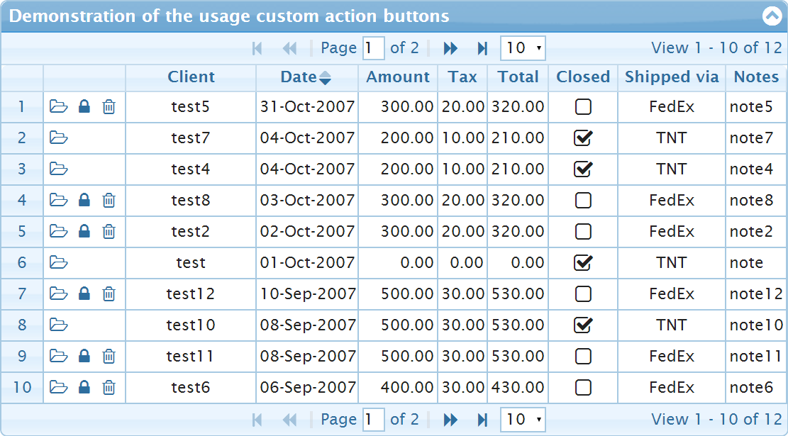
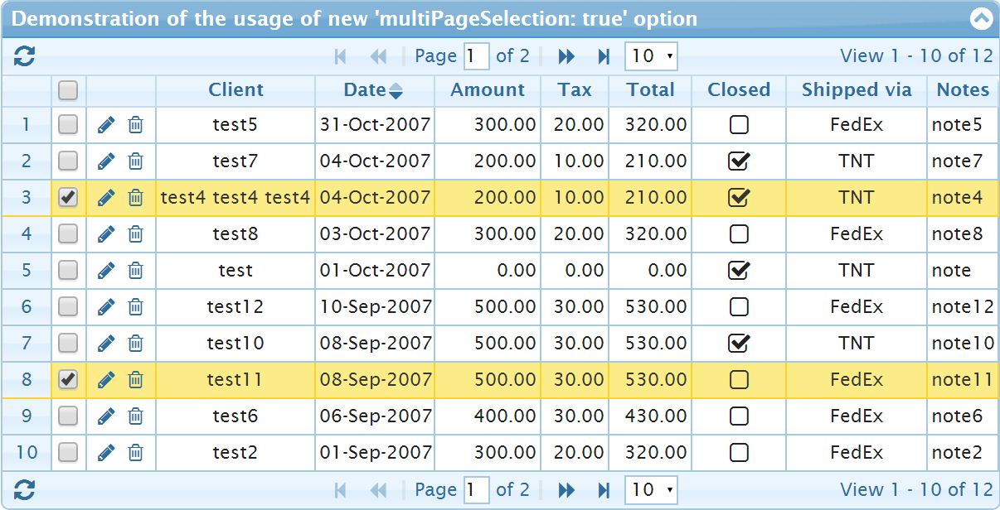
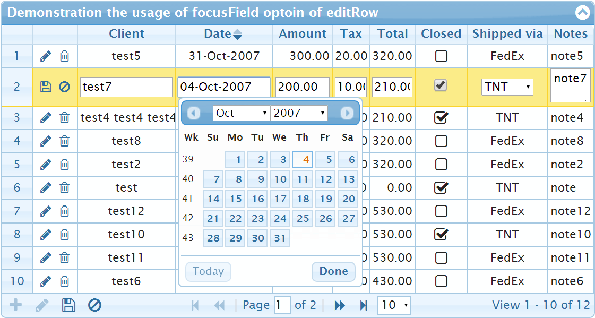
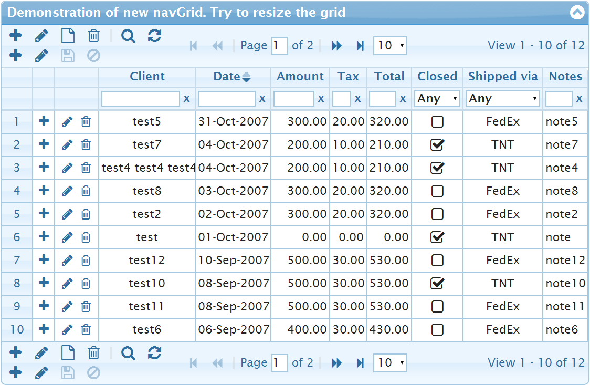
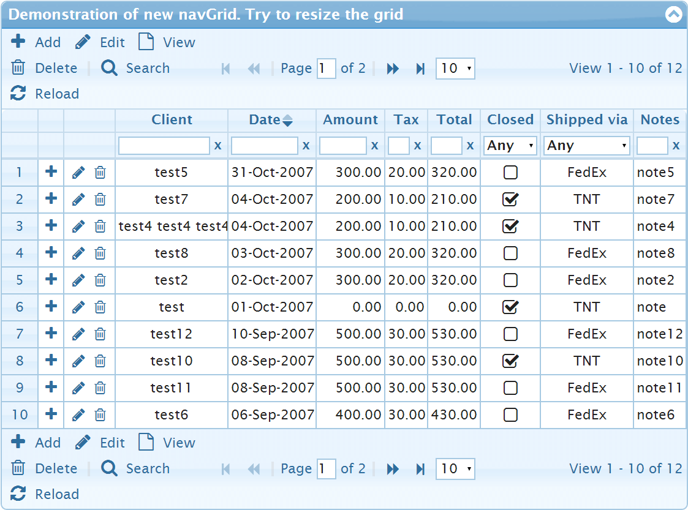
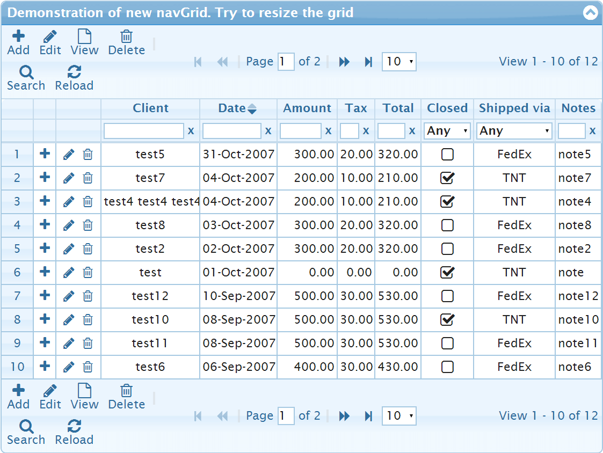

See the answer for details
multiPageSelection: true option. It allows to maintains selection of rows over multiple pages on the grid.

See the answer for details
focusField option of editRow method. It allows very easy start inline editing with setting the focus on the cell clicked by the user.

See the answer for details
hasSubgrid callback of subGridOptions option. It allows to display "+" subgrid icon on rows which have subgrids only.
See the answer for details
threeStateSort: true option. It allows to change the behavior of multiple clicks on the column header. Instead of standard 2-state behavior jqGrid will use 3-state behavior where the third click on the column header implies displaying unsorted grid.
See the pull request for details
navGrid method with icons in combination with Font Awesome 4. The icons of the navigator bar will be automatically wrapped on the next line.

navGrid method with icons and texts.

navGrid method with icons, texts and iconsOverText: true.
